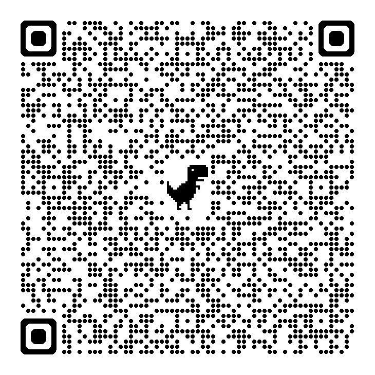

A simple experience trail based on places we verified and that are appropriate for visitors.
Only include locations you have actually visited and confirmed as suitable.
Village entry
Observe (do not disturb) local fishing and sales activity
Iconic structures along the backwaters
View from paths or boats — do not enter sensitive zones
Boat rides with local operators where available
Visit the shoot locations
Support local eateries and home-cooked experiences responsibly
Walk, observe, ask permission before photographing people

Kumbalangi MapOpens Google Maps / custom map
Bioluminescence explanation
Travellers' vlogs
Unveiling the MAGICAL Glow Hidden in 'Kumbalangi Nights' in Kochi
Scan the QR codes that link to the corresponding pages or Google Drive / YouTube embeds.